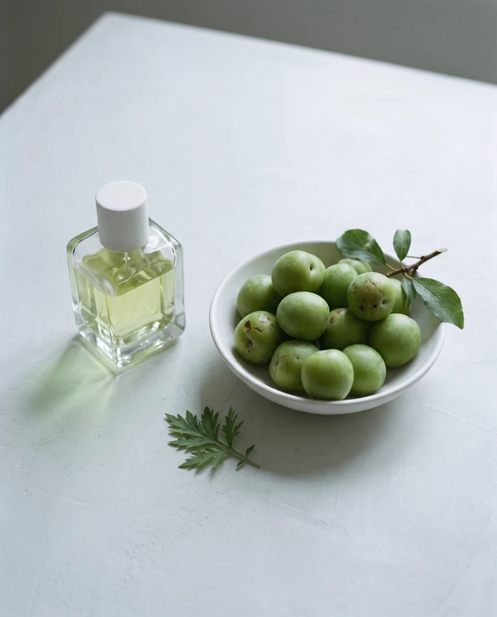
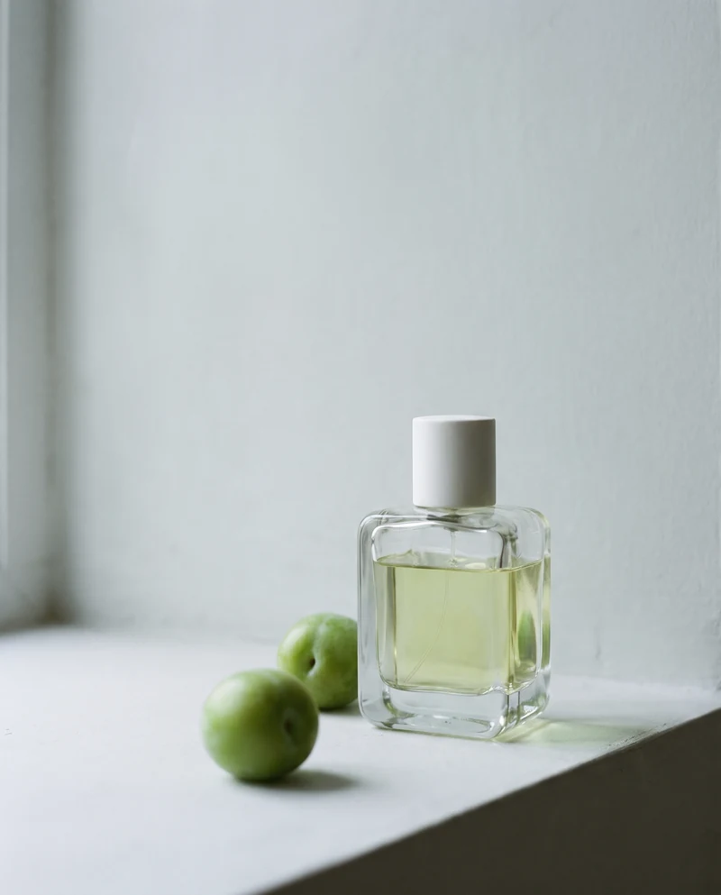
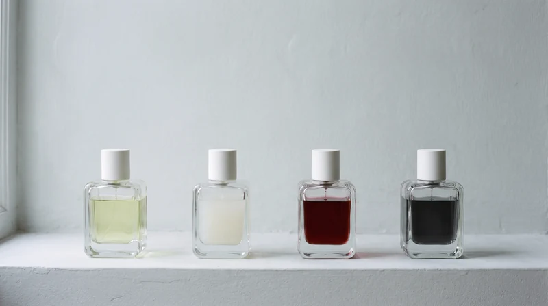
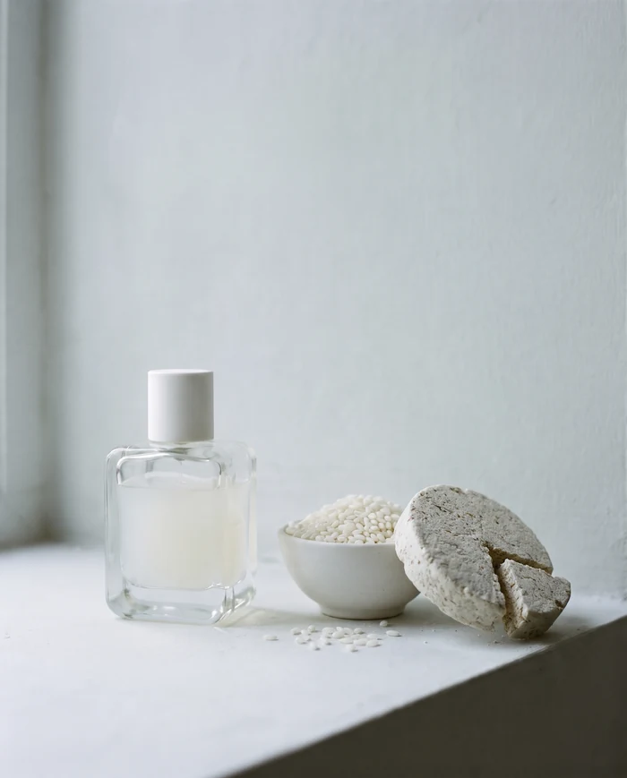
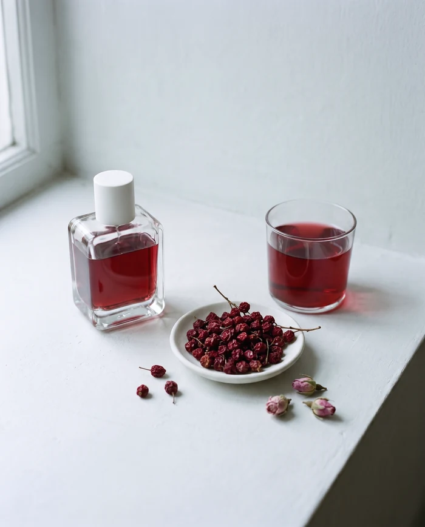
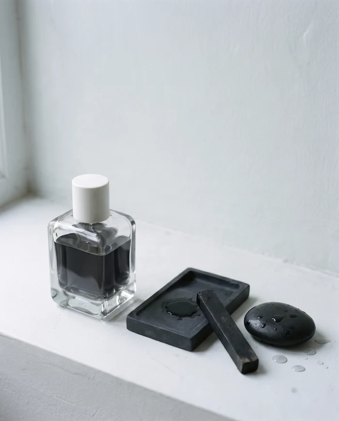
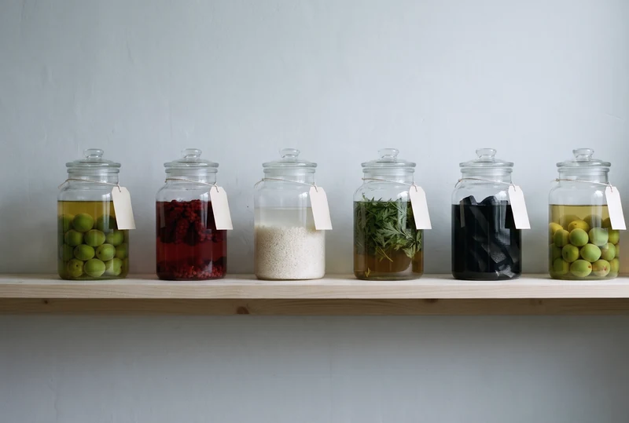
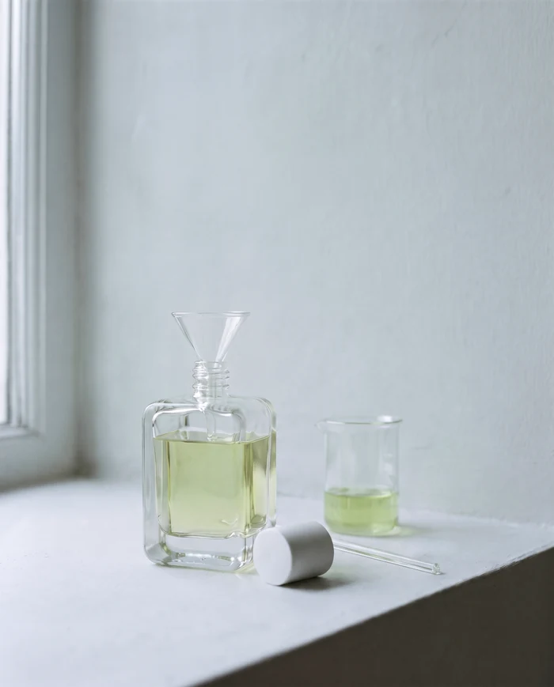
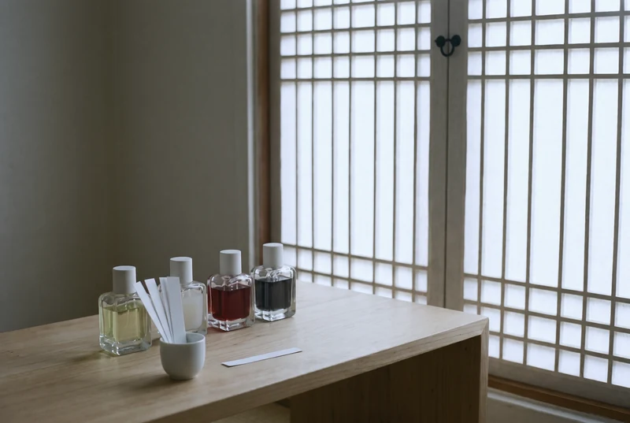

No.01
유월 Yuwol
유월에 딴 단단한 풋매실과 손으로 비빈 쑥잎. 비가 그친 아침 마당 냄새입니다.
- 첫 향
- 풋매실, 초피
- 가운데 향
- 매실잎, 쑥
- 잔향
- 편백, 젖은 이끼
50 ml 168,000원 15 ml 58,000원
담금은 장독골 골목의 작은 작업실에서 네 가지 향만 만듭니다. 제철 원료를 알코올에 담가 마흔 날을 기다렸다가, 한 병씩 손으로 채웁니다.

오 드 퍼퓸 50 ml 168,000원부터 작업실에서만 팝니다
해마다 제철에 한 번씩 담급니다. 유월에는 풋매실을, 구월에는 오미자를, 십일월에는 햅쌀과 누룩을, 일월에는 먹을. 다 팔리면 다음 철을 기다립니다.


No.01
유월에 딴 단단한 풋매실과 손으로 비빈 쑥잎. 비가 그친 아침 마당 냄새입니다.
50 ml 168,000원 15 ml 58,000원

No.02
갓 찐 햅쌀과 잘 띄운 누룩. 술독을 처음 연 아침처럼 희고 포근합니다.
50 ml 168,000원 15 ml 58,000원

No.03
술에 담근 오미자와 말린 장미. 끝은 오래 낀 스웨이드 장갑처럼 부드럽습니다.
50 ml 168,000원 15 ml 58,000원

No.04
벼루에 간 먹과 소나기 지난 마당의 돌. 방 안에 낮게 깔립니다.
50 ml 186,000원 15 ml 64,000원
조향사 윤소담은 할머니가 매실과 오미자로 술을 담그던 부엌 찬장 앞에서 향을 처음 배웠습니다. 병마다 날짜를 적어 두고 한 달이 지나서야 열어 보던 그 찬장이 지금 작업실의 방식이 되었습니다.
2019년 장독골 골목의 한옥 한 칸을 빌렸고, 지금도 원료를 고르는 일부터 라벨에 날짜를 적는 일까지 혼자 합니다. 한 해에 담그는 양은 향마다 사백 병 남짓입니다.

1일째
남해안 섬마을의 매실, 경북 산골의 오미자처럼 산지를 정해 두고, 그해 거둔 것을 보고 양을 정합니다.
2일째
원료를 저울로 달아 알코올에 담그고, 빛이 들지 않는 선반에 올립니다.
3–40일째
매일 같은 시각에 병을 한 번 돌리고, 색과 가라앉은 것을 공책에 적습니다.
41일째
영하 가까이 식혀 탁한 것을 가라앉힌 뒤, 종이 필터로 두 번 거릅니다.
42일째
깔때기로 한 병씩 채우고, 라벨에 담근 날과 거른 날을 손으로 적습니다.


담금은 온라인으로 팔지 않습니다. 시향실에서 네 가지를 차례로 맡아 보고 고르시면 됩니다. 한 번에 두 분까지 받습니다.
시간에 맞춰 오시면 문 앞에서 기다리겠습니다. 가상 브랜드의 예시 화면이라 실제 예약은 되지 않았습니다.